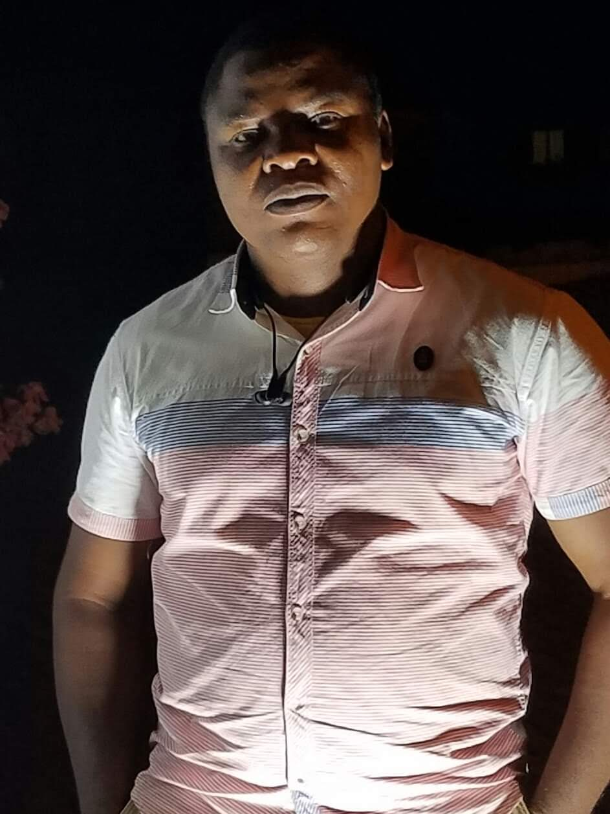

I am a web developer and a mobile app developer with over 15 years of video production, editing, and animation experience, and a strong background in cybersecurity and forensics. I work at Channels Television, one of the leading media outlets in Nigeria, where I create engaging and secure online experiences for their audience and clients. I am a versatile Technology Professional, Web Developer, Mobile App Developer, Cybersecurity Specialist, Digital Forensics Practitioner, and Senior Multimedia Producer with over 15 years of experience delivering innovative solutions across media, technology, cybersecurity, and digital content production. Currently, I work with Channels Television, one of Nigeria's leading media organizations, where I contribute to the development of secure digital platforms and the production of high-quality multimedia content that engages millions of viewers across multiple channels. My unique blend of technical expertise, cybersecurity knowledge, and creative production skills enables me to create secure, scalable, and engaging digital experiences. My professional background spans full-stack web development, mobile application development, cybersecurity, digital forensics, broadcast technology, video production, motion graphics, animation, and artificial intelligence integration. I have extensive experience designing, developing, and securing digital products while leveraging emerging technologies to enhance efficiency, user engagement, and business outcomes. I hold an Associate Degree in Cybersecurity from Codar Institute and am certified in CompTIA Security+. I have also completed advanced cybersecurity training through StationX Institute of CyberSecurity, including: The Complete Cyber Security Course: Hackers Exposed The Complete Cyber Security Course: Network Security The Complete Cyber Security Course: Anonymous Browsing and Privacy Protection My cybersecurity expertise includes threat analysis, vulnerability assessment, network security, secure application development, digital investigations, and the implementation of security best practices that help organizations protect critical systems and sensitive data from evolving cyber threats. As a Senior Video Editor, Motion Graphics Designer, and Multimedia Producer, I have successfully produced, edited, animated, and delivered a diverse range of television programs, documentaries, health campaigns, lifestyle features, promotional content, corporate productions, and digital media projects. I am highly proficient in the Adobe Creative Suite, DaVinci Resolve, Final Cut Pro, and a wide range of AI-powered creative and productivity platforms that support content creation, automation, visual enhancement, research, and workflow optimization. I actively integrate artificial intelligence into software development, cybersecurity, content production, and digital media workflows to improve productivity, enhance creativity, automate repetitive processes, and accelerate project delivery. My ability to combine traditional technical expertise with modern AI-driven solutions allows me to deliver innovative, efficient, and future-ready results. Throughout my career, I have collaborated with multidisciplinary teams, stakeholders, and clients to transform ideas into impactful digital products and compelling visual stories. Whether developing secure applications, producing broadcast-quality content, implementing cybersecurity measures, or leveraging AI to solve complex challenges, I am committed to delivering excellence and driving meaningful results. Passionate about technology, innovation, cybersecurity, and storytelling, I continuously explore emerging trends and cutting-edge tools to create smarter, safer, and more engaging digital experiences.
With over 15 years of professional experience in video production, post-production, and multimedia content creation, I specialize in delivering high-quality visual content for television, advertising, corporate communications, documentaries, digital platforms, and live events. My expertise covers the complete post-production workflow, including video editing, color correction, motion graphics, visual effects, audio synchronization, content optimization, and final delivery for broadcast, web, and mobile platforms. Using advanced editing workstations and industry-leading post-production tools, I ensure that projects are processed and delivered with maximum visual fidelity, preserving source quality throughout the editing and finishing process. My workflow emphasizes precision, quality assurance, and optimized delivery for television broadcast, streaming platforms, social media, and digital distribution channels. Areas of Expertise * High-Definition (HD) and Full HD Video Editing * Television Production & Broadcast Content * Documentary Production & Editing * Commercials and Advertising Content * Corporate Video Production * Event Coverage & Post-Production * Motion Graphics & Animation * Visual Effects (VFX) * Color Grading & Color Correction * Audio Editing & Synchronization * Digital Content Creation * Broadcast Workflow Management * Film-to-Digital Post-Production Workflows * Multi-Format Media Conversion & Optimization * AI-Assisted Video Production & Content Enhancement * Content Delivery for Broadcast, Web, Mobile, and Streaming Platforms My goal is to combine creativity, technical excellence, and emerging technologies to produce compelling visual stories that engage audiences, strengthen brands, and deliver measurable results.
See MoreWe provide professional web and mobile app development as well as high-definition video editing and post-production services for TV, advertising, documentaries, films, corporate content, and live events. Our production workflow supports a wide range of broadcast and digital formats, using industry-standard tools and native media processing to ensure maximum quality and efficiency with no loss in fidelity. We deliver secure, scalable, and user-focused digital solutions alongside high-quality visual content, combining software development, mobile technology, and creative media production into one integrated service offering.